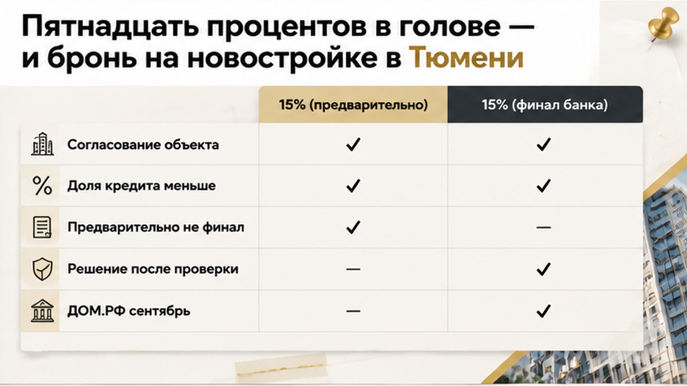
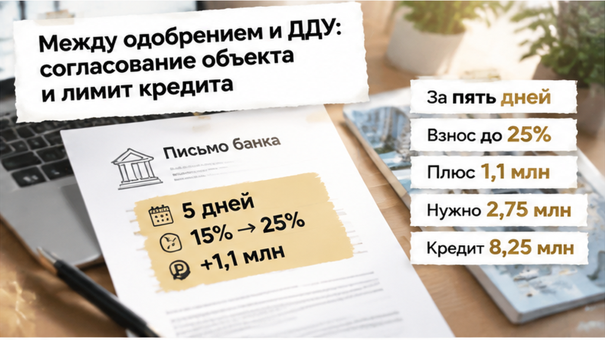
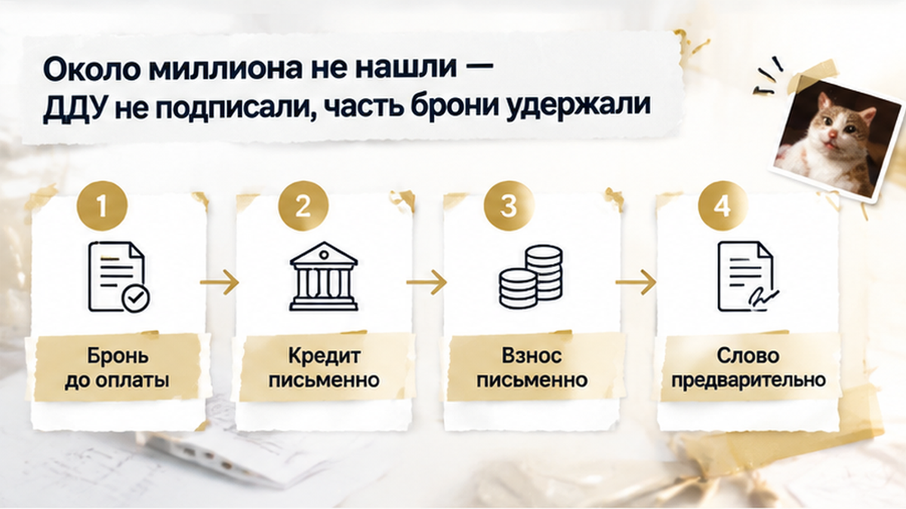
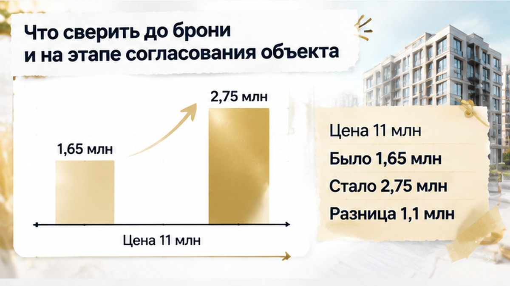

За пять дней до ДДУ банк поднял первоначальный взнос с 15% до 25% — семье в Тюмени не хватило 1,1 млн рублей, и сделку пришлось остановить. Квартира в новостройке уже была выбрана и забронирована, предварительное одобрение ипотеки получено. Оставалось пройти согласование объекта и подписать договор с застройщиком. Но после проверки конкретной квартиры банк уменьшил сумму кредита, и вопрос стал не в ежемесячном платеже, а в том, где срочно взять деньги на входе. Несколько недель подготовки не превратили предварительный расчёт в окончательное обязательство банка.
Я Святослав Шакин, The Риэлтор, Тюмень. Рассказываю изнутри, как устроена покупка новостройки: что скрывается за словами «ипотека одобрена», какие деньги понадобятся на самом деле и где покупатель рискует заплатить ещё до ДДУ. Подписывайтесь в Telegram или MAX, чтобы разбираться в условиях сделки до оплаты, а не перед самым подписанием.
Сначала у семьи всё складывалось в привычную картину. Квартиру выбрали, за бронь заплатили, предварительное одобрение ипотеки получили. При цене 11 млн рублей первоначальный взнос 15% — это 1,65 млн собственных средств. Остальные 9,35 млн должен был закрыть кредит.
В быту эти понятия легко смешать. «Нам одобрили ипотеку» постепенно превращается в «банк даст деньги на эту квартиру». Бронь усиливает ощущение, что решение уже принято: выбор сделан, за него заплатили, осталось только донести документы.
Но плата за бронь закрепляет договорённости по бронированию, а не обещание банка выдать определённую сумму. Это две разные части одной покупки. Одна связана с застройщиком и выбранной квартирой, другая — с решением банка по заёмщику и объекту.
Есть и ещё одна важная деталь. Семья-покупатель и программа «Семейная ипотека» — не одно и то же. По официальным условиям программы первоначальный взнос начинается от 20%. Поэтому исходные 15% в этой истории — параметр предварительного расчёта, а не подтверждение льготной схемы с таким взносом.

Между первым решением банка и назначенным подписанием обычно проходит время. В этой истории были проверки, документы, согласование с застройщиком. В этот период банк ещё может оценивать конкретный лот, проект, стоимость будущего залога и долговую нагрузку заёмщика.
Предварительное одобрение нередко появляется раньше, чем окончательно выбран объект. Поэтому положительный ответ по заявке не означает, что банк готов дать ту же сумму именно на эту квартиру.
У банков для этого есть сокращение LTV. Если по-простому — сколько кредита банк готов дать на конкретную цену квартиры. Когда банк уменьшает свою долю, а стоимость по договору остаётся прежней, разницу должен закрыть покупатель.
На странице вопросов и ответов ДОМ.РФ в ответе от 15 сентября 2026 года указано: окончательное решение каждый банк принимает самостоятельно после получения полного пакета документов. Для покупателя важна именно эта граница — между предварительным ответом и финальными условиями.
В истории об изменении ставки перед ДДУ ломался расчёт ежемесячного платежа. Здесь механизм другой: до покупки нужно принести больше собственных денег, даже если ставка и будущий платёж не меняются.

До подписания ДДУ оставалось пять дней. Именно тогда менеджер сообщил семье новые условия: на выбранную квартиру банк готов выдать меньше, чем показывал первоначальный расчёт.
После проверки объекта и связанных с ним рисков требуемый первый взнос вырос до 25%. Цена квартиры не изменилась. Изменилась сумма, которую нужно было принести из своих денег.
Калькулятор пришлось открывать заново. При стоимости квартиры 11 млн рублей взнос 15% составлял 1,65 млн рублей, а кредит — 9,35 млн. При взносе 25% собственных средств требовалось уже 2,75 млн, а сумма кредита снижалась до 8,25 млн.
Разница — 1,1 млн рублей до сделки. Не в течение нескольких лет платежами, а сразу, до подписания документов.
По сути, банк уменьшил свою долю в стоимости объекта: раньше в расчёте было 85%, теперь — 75%. Квартира не стала дороже, но часть цены, которую семья рассчитывала закрыть кредитом, пришлось искать самостоятельно.
В материале о повышении ставки перед ДДУ расчёт ломался по-другому: менялась стоимость кредита и рос ежемесячный платёж. Здесь проблема возникла ещё до первого платежа — не хватило собственных средств.
Не стоит смешивать этот случай и со снятием схемы без первоначального взноса. Семья изначально собиралась внести свои деньги. Просто после нового решения банка подготовленной суммы оказалось недостаточно.

Оставшиеся пять дней должны были уйти на подготовку к подписанию. Вместо этого семье пришлось искать дополнительную сумму, которой в бюджете не было.
Квартира уже находилась в брони. Поэтому отказ означал не только возвращение к поиску нового варианта. На другой чаше весов стояла плата за бронь — и риск потерять её часть.
Здесь важно не путать ситуацию с добровольным увеличением взноса. Иногда покупатель сам решает внести больше, чтобы уменьшить кредит. Такой пересчёт документов может занять один–три дня, но он не создаёт новые деньги.
В этой истории больше собственных средств потребовал банк. Свободной суммы у семьи не оказалось, а за оставшееся время собрать её не успели.
Дальше всё упиралось уже не в первоначальный расчёт, а в возможность провести сделку на новых условиях. ДДУ не подписали, эскроу не открыли. До расчётов за квартиру по 214-ФЗ дело не дошло.
Но бронь — отдельный платёж. Его судьбу определяет договор бронирования. Единого правила, по которому изменение требований банка автоматически возвращает покупателю всю сумму, нет.
В этой ситуации часть платы за бронь удержали по условиям договора. Получился неприятный, но счёт такой: до сделки семья остановилась, деньги застройщику на эскроу не ушли, однако выйти совсем без потерь не получилось.
За пять дней до ДДУ банк поднял взнос с 15% до 25%: искать ещё 1,1 млн рублей ради выбранной квартиры или отказаться, потеряв часть платы за бронь?
Я бы начинал не с вопроса «ипотеку одобрят?», а с более практичного: сколько собственных денег понадобится именно на эту квартиру и что произойдёт с бронью, если банк уменьшит сумму кредита.
В договоре бронирования нужно посмотреть, за что именно платят. Это услуга, аванс или отдельный платёж с собственными условиями возврата? Что произойдёт, если покупатель откажется от сделки после изменения банковских требований? Устная фраза «если что, вернём» не заменяет пункт договора.
Автоматического возврата платы за бронь из-за увеличения первого взноса банк или застройщик не обещают. Судьба этих денег зависит от текста, который покупатель подписал до передачи суммы. Поэтому договор бронирования стоит читать до оплаты, а не искать там ответ уже после срыва сделки.
На этапе согласования объекта я бы запросил письменно три вещи: сумму кредита, размер обязательного первого взноса и срок действия решения. Вопрос банку можно поставить прямо: «Это расчёт по выбранной квартире или предварительные условия, которые ещё могут измениться после проверки объекта?»
Письменный ответ не превращается в кредитный договор, но показывает, какая часть проверки ещё впереди. Если в переписке остаются формулировки «предварительно» и «после проверки объекта», финальные цифры ещё не закреплены.
Если банк ещё не подтвердил финальные условия, это нужно учитывать в договоре бронирования. Не оставлять на словах, а заранее выяснить, можно ли отказаться от покупки при уменьшении кредита и какую сумму в таком случае удержат.

Разницу лучше смотреть в рублях, а не только в процентах. Ниже — расчёт для квартиры стоимостью 11 млн рублей. Он показывает, как уменьшение кредита переносит часть оплаты на покупателя.
| Что сравниваем | Предварительный расчёт | После согласования объекта |
|---|---|---|
| Цена квартиры | 11 млн рублей | 11 млн рублей |
| Первый взнос | 15% — 1,65 млн рублей | 25% — 2,75 млн рублей |
| Сумма кредита | 9,35 млн рублей | 8,25 млн рублей |
| Дополнительные собственные деньги | Не заложены в первоначальный расчёт | Нужно ещё 1,1 млн рублей |
Квартира не подорожала. Ставка в этом расчёте тоже не менялась. Изменилось то, сколько кредита банк готов дать на выбранную цену. Поэтому большую часть стоимости пришлось закрывать собственными деньгами.
Плату за бронь при этом нельзя считать деньгами, которые уже защищены на эскроу. О том, почему одобрение семейной ипотеки ещё не означает открытия эскроу, я писал в материале «Семейную ипотеку на новостройку одобрили — эскроу не открыли». Пока ДДУ не подписан и расчёты не проведены, покупка остаётся на подготовительном этапе.
В Telegram и MAX разбираю покупки новостроек в Тюмени: где заканчивается предварительный расчёт, что проверять в договоре бронирования и какие вопросы задать банку до передачи денег.
Сумму первого взноса и лимит кредита стоит выяснить до оплаты брони, а затем подтвердить при согласовании конкретного объекта — до подписания ДДУ. Если окончательного решения ещё нет, это риск покупателя, который должен быть виден заранее.
В этой истории семья остановилась до эскроу. ДДУ не подписали, расчёты за квартиру не начались, деньги застройщику не ушли. Но часть платы за бронь удержали. Получается неприятный, но важный контраст: остановиться до сделки удалось, а выйти совсем без потерь — нет.